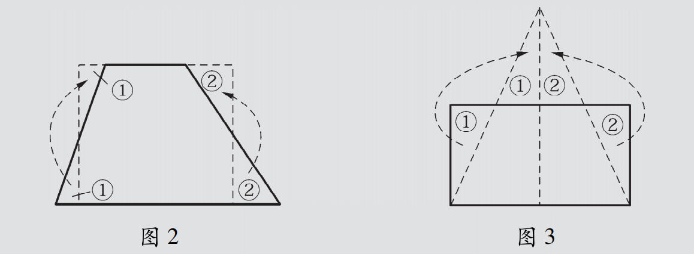
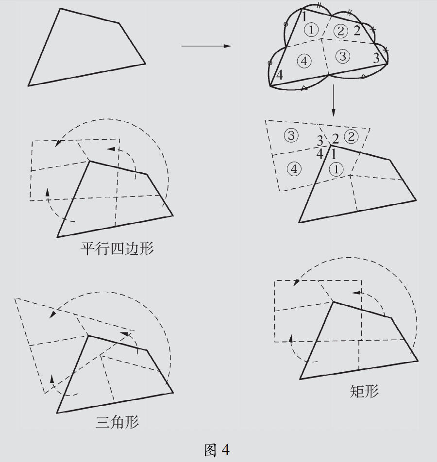

我们已经知道，一组邻边相等的平行四边形是菱形，它具有很多很好的性质：轴对称、四条边相等、两条对角线互相垂直。
现在让我们从菱形出发，让一个顶点动起来——把菱形 $ABCD$ 的一个顶点 $A$ 看成一个动点，将其沿对角线 $AC$ 逐渐向顶点 $C$ 移动。
如图 1，把菱形 $ABCD$ 的一个顶点 $A$ 看成一个动点，将其沿对角线 $AC$ 逐渐向顶点 $C$ 移动，形成如图 2 至图 4 的一系列图形。
我们可以看到，图形 $ABCD$ 的形状发生了一系列的变化，那么在这样的变化过程中，该图形的性质，有哪些始终保持不变，哪些又发生了一些变化？
对于变化过程中的图 2和图 4，它们与生活中哪些物件的形状相似？你能否给它们起一个较为合适的名称呢？
请将你的探索与发现，归纳成如下的表格：
| 图形 | 名称 | 性质 | |
|---|---|---|---|
| 不变量 | 变量 | ||
| 图 1 | 菱形 | ||
| 图 2 | |||
| 图 3 | 等腰三角形 | ||
| 图 4 | |||
分析要点：
在 $A$ 沿 $AC$ 移动的过程中，始终不变的性质有：图形始终关于对角线 $AC$ 成轴对称；始终有 $AB = AD$，$CB = CD$（因为 $B$、$D$ 关于 $AC$ 对称）。
发生变化的性质有：$AB$（$AD$）的长度逐渐变短（$A$ 向 $O$ 移动时）或变长（$A$ 越过 $O$ 后）；$\angle ABC$、$\angle ADC$ 的大小在变化；图形的面积也在变化。
图 2 和图 4 的名称：它们的形状都类似于生活中的风筝，在数学上称为筝形（kite）。
我们知道，一个平行四边形总可以剪开拼成一个矩形（如图 1）。
一个梯形可以剪开拼成一个矩形（如图 2），一个矩形可以剪开拼成一个三角形（如图 3）。

那么任意一个四边形呢？它也可以剪开拼成各种各样的图形。
在硬纸板上任画一个四边形，沿某些直线剪开，用 平移 或 旋转，你能把剪开的图形拼成一个平行四边形吗？观察一下，你也试试看。
再用同样的方法，试试能否拼成一个矩形？能否拼成一个三角形？

想想看，在这些剪拼过程中，都用到了图形的什么变换？
图（1）平行四边形 → 矩形：沿高剪下一个直角三角形，将该三角形平移到另一侧，即拼成矩形。用到了平移变换。
图（2）梯形 → 矩形：取两腰的中点，沿中点连线剪开，将两个小三角形分别旋转 180° 到上侧，即可拼成矩形。用到了旋转变换。
图（3）矩形 → 三角形：从矩形上边中点沿两条线段剪到左右下角，将两侧的两个直角三角形旋转向上，即可拼成一个大三角形。用到了旋转变换。
图（4）任意四边形 → 平行四边形/矩形/三角形：取四边形四边中点，沿对边中点连线剪开，分成四块（①②③④），通过适当的平移和旋转即可拼成平行四边形、矩形或三角形。
规律总结：所有这些剪拼变换都保持面积不变，体现了等积变换的思想。核心方法是：确定剪开的位置（如中点、高线），然后运用平移或旋转将剪开的图形块重新组合。
几何直观：通过图形的动态变化过程，感受图形间的内在联系和演变规律。
推理能力：在变化中寻找不变的性质，培养"变中求不变"的数学思维。